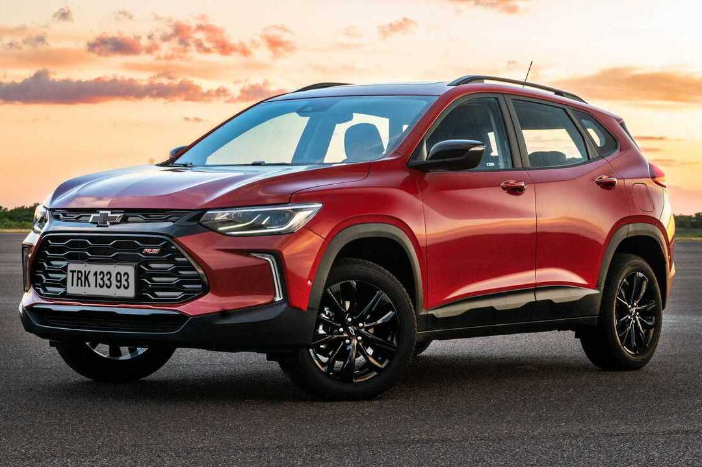

Serviços Gm
Serviços Gm

Serviços de Diagnóstico Avançado
- Utilização de scanners e softwares de diagnóstico de última geração para identificar falhas em sistemas eletrônicos como injeção, ABS, airbag, controle de tração e outros módulos do seu veículo GM.
- Reparos precisos em sistemas eletrônicos, realizados por técnicos treinados para lidar com a complexidade dos veículos GM modernos.
Serviços de Revisão Programada Chevrolet
- Realização das revisões periódicas conforme o manual do proprietário do seu veículo GM, garantindo a manutenção preventiva e a conformidade com os padrões da fábrica.
- Check-up completo do veículo, incluindo a verificação de diversos itens de segurança e funcionamento, com a substituição de peças conforme a necessidade para manter a garantia e a performance do seu GM.
Serviços de Instalação de Acessórios Genuínos e Personalização
- Instalação de acessórios originais Chevrolet, como alarmes, engates, sensores de estacionamento, racks de teto e outros itens que agregam valor e funcionalidade ao seu veículo.
- Serviços de personalização estética e funcional do seu GM, seguindo as suas preferências e utilizando produtos de qualidade.
Serviços de Higienização e Ozonização Veicular
- Limpeza profunda do interior do veículo, incluindo aspiração, lavagem de estofados e painel, para remover sujeira e resíduos.
- Higienização do sistema de ar condicionado e aplicação de ozônio para eliminar bactérias, fungos e odores, proporcionando um ambiente interno mais saudável no seu GM.
Serviços de Cristalização e Polimento da Pintura
- Aplicação de produtos que protegem a pintura do seu Chevrolet contra raios UV, chuva ácida e outros agentes externos, realçando o brilho e facilitando a limpeza.
- Polimento técnico da pintura para remover riscos superficiais, manchas e imperfeições, revitalizando a aparência do seu veículo.
Serviços de Adaptação para Pessoas com Deficiência (PCD)
- Realização de adaptações veiculares para atender às necessidades de condutores e passageiros com deficiência, seguindo as normas e regulamentações vigentes para veículos PCD da linha GM.
- Instalação de equipamentos como comandos manuais, plataformas elevatórias e outros dispositivos que facilitam a acessibilidade e a condução do veículo.
Serviços de Martelinho de Ouro
- Técnica de reparo de pequenos amassados na lataria sem a necessidade de pintura, preservando a originalidade do veículo GM.
- Serviço rápido e eficiente para remover amassados causados por chuva de granizo, pequenas colisões ou outros incidentes.
Serviços de Atendimento Personalizado e Consultoria Técnica
- Consultores técnicos especializados em veículos GM para auxiliar na identificação de problemas, esclarecer dúvidas sobre manutenção e recomendar os melhores serviços para o seu carro.
- Acompanhamento personalizado do serviço realizado no seu veículo, garantindo a sua satisfação e a transparência no processo.